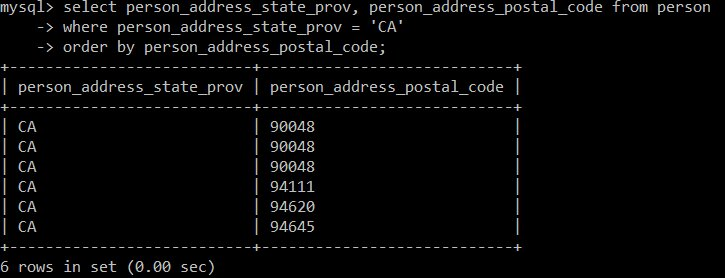
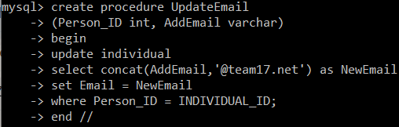
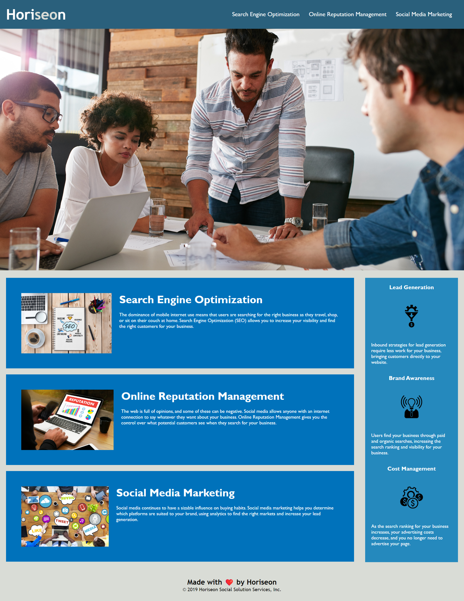

Hi, I'm Maggie.
And I'm a
Computer Programmer
and Engineer.
I currently work full time at Target as a Starbucks Barista. I graduated Magna Cum Laude from Valparaiso University in May 2021 with a degree in Computer Science and Engineering. I have learned to code in C, C++, HTML, CSS, and JavaScript. I am also familiar with MATLAB, Arduino, Git, and MySQL. Outside of work, I love film and photography. Music is my life and I love it in all forms. I mostly collect records and cassette tapes. I would love to be able to travel more and experience new things. With my current level of experience and education, I am looking for a position as a Computer Programmer or Software Engineer. In a world forever changing by technology, I want to be part of that change and help make people's lives easier.
In college, I worked a lot with networks and databases. I mainly focused on MySQL databases and how to write many different queries. Some examples are shown below.
 In this activity, I was asked to correct the code so that I could be able to find semantic HTML elements, find accessible alt attributes, and find that the elements follow a logical structure independent of styling and positioning.
